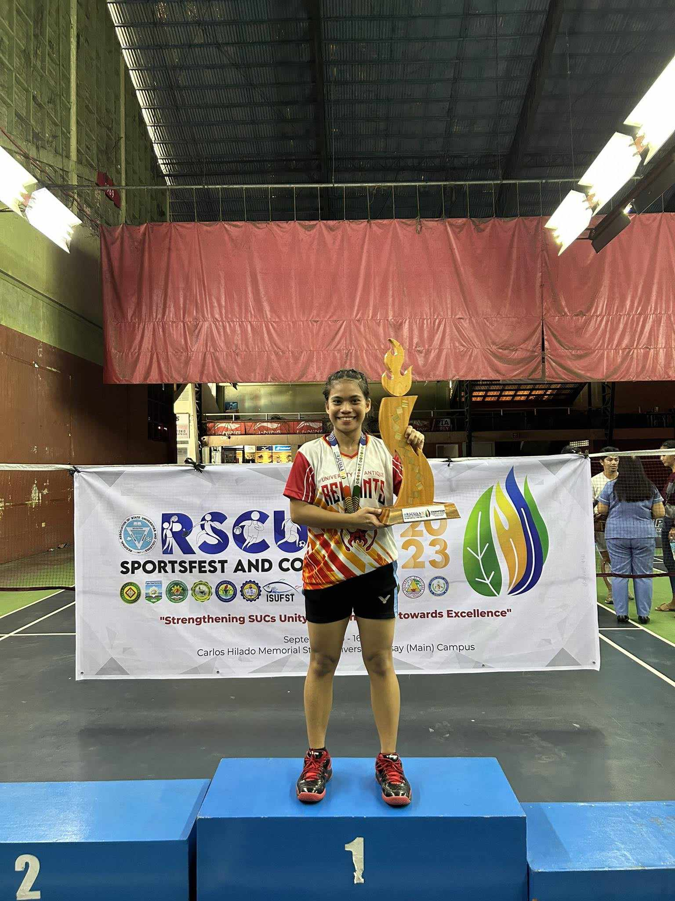
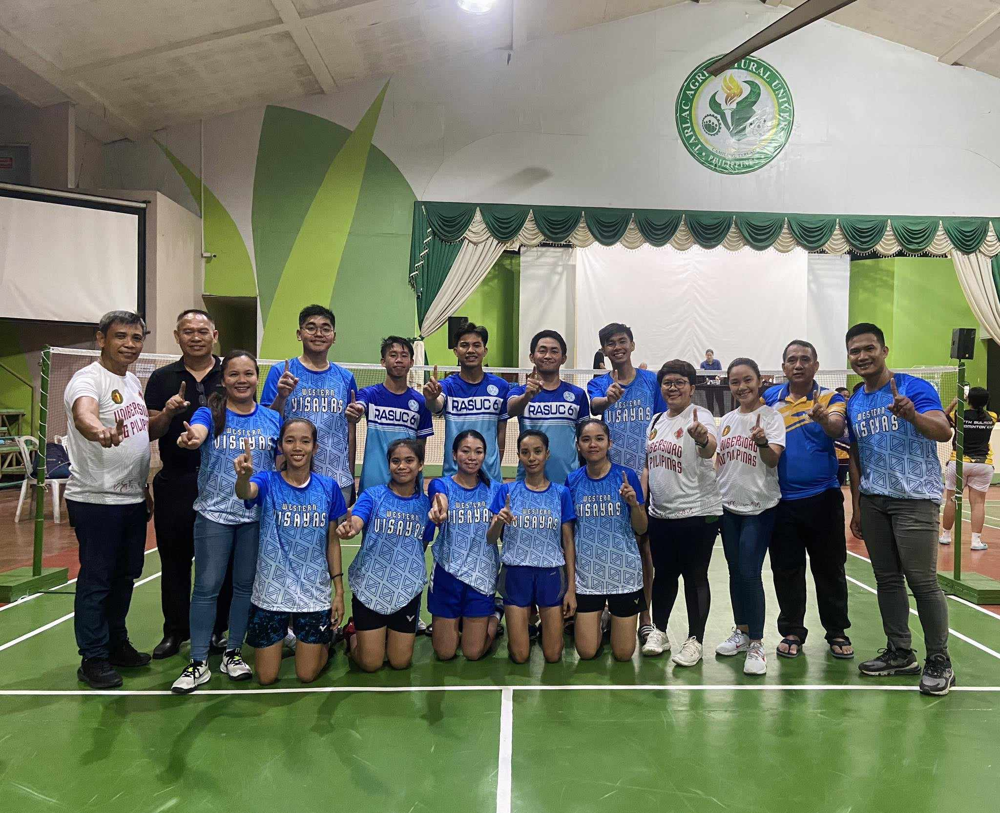
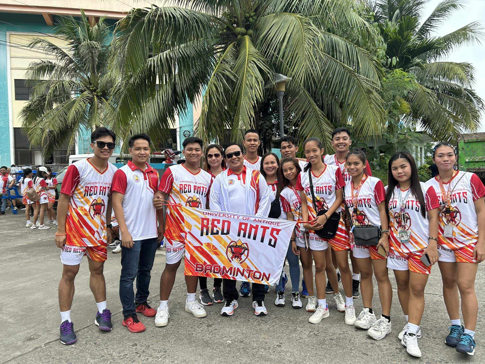
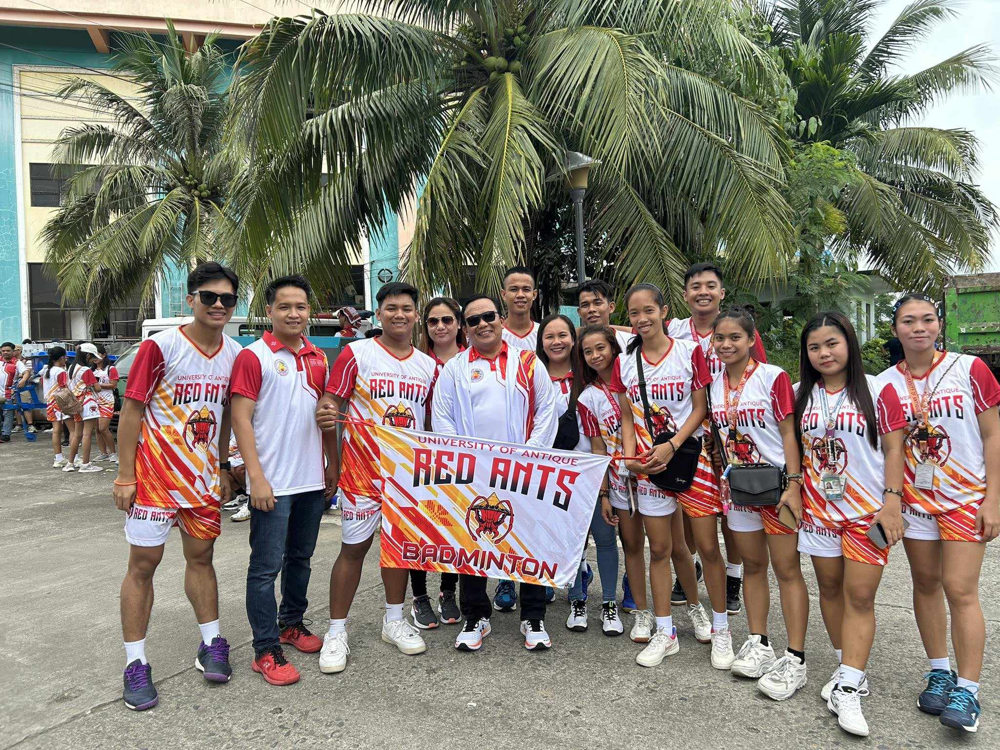

DIGITAL ART
Achievements
National Varsity Player: Competed at a national level, which taught me the value of teamwork, discipline, and communication. This experience challenged me to grow both as an individual and as a team member, competing against top players from other schools.


 
